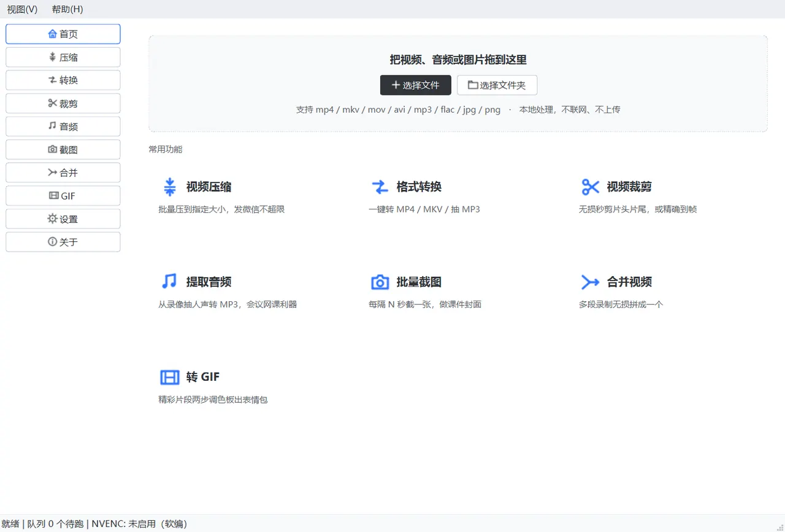

音视频工具箱
MediaToolbox · 音视频工具箱.exe
绿色免安装、纯本地运行的 Windows 音视频处理小工具

这是什么
- 软件只处理你本人拥有合法权利的文件（自己的录像、网课、素材）。
- 它不提供去水印、去台标、录屏抓流、平台视频下载、加密光盘解密这类功能，界面里也没有对应入口。
下载渠道
下载后解压即用，不需要装运行库；软件全程在本机运行，文件不上传。
怎么用
安装
- 把下载到的压缩包解压到任意可写目录，例如
D:\音视频工具箱。不要放在C:\Program Files、C:\Windows这类受保护目录，也不要直接在压缩包里双击运行。 - 解压后应能看到
音视频工具箱.exe、bin、presets、licenses、_internal等内容。整个文件夹一起搬动，不要只拷 exe。 - 首次启动如果 Windows 弹出「已保护你的电脑」提示，点【更多信息】→【仍要运行】即可。
启动
- 双击文件夹里的「音视频工具箱.exe」。
- 启动后进入首页：左侧是功能导航，中间是七个功能卡片和拖放区。
如果杀毒软件把 bin\ffmpeg.exe 隔离了（这个文件本身能处理任意媒体流，容易被启发式规则误报），在安全软件的「保护历史记录」里选择还原，并把整个软件目录加入信任区。软件没有改动、也没有加壳这个文件，licenses\FFmpeg-BUILD.txt 里记录了官方校验值。
功能详解
通用操作
后面每一页的操作逻辑都一样，先熟悉这一节，再看具体功能。
添加文件与文件夹
这个功能做什么：把要处理的文件放进当前功能页的列表，软件会自动读出时长、分辨率、大小，并生成缩略图。
操作步骤：
- 在任意功能页点右上角的【添加文件】，选中一个或多个文件。
- 或者点【添加文件夹】，勾选是否包含子目录，软件会把支持的媒体文件一起加进来。
- 也可以直接把文件或文件夹拖进窗口，拖入时窗口会高亮提示。
操作后你会看到：列表里每行出现缩略图、时长、分辨率、源大小，状态从「探测中」变成「就绪」。不支持的格式会被忽略并给出提示。
勾选、移除与排序
- 每行最左侧是复选框，没勾选的文件不参与本次处理。
- 选中一行按
Delete，或右键选【从列表移除】，把文件移出列表。 - 合并页额外提供【上移】【下移】，用来决定拼接顺序。
输出目录与文件命名
这个功能做什么：决定产物存到哪里、叫什么名字，避免覆盖原文件。
操作步骤：
- 默认输出是「源文件所在目录\音视频工具箱输出」。想统一放一处，点【更改…】选目录；点【默认】恢复成按源目录输出。
- 想改命名规则，进【设置】→【输出】→【命名模板】，可选带预设名、日期等占位符的模板。
- 重名时默认「自动加后缀」，也可以改成覆盖或跳过。
操作后你会看到：参数区下方一行实时显示「几个文件 · 源多大 · 预估输出多少 · 输出到哪个目录」，点【打开】直接跳到该目录。
开始、暂停与取消
操作步骤：
- 选好参数后点【开始】，软件先做一次磁盘空间和写权限检查，通过后开始排队。
- 运行中点【暂停】，正在跑的文件会跑完，后面的不再派发；再点一次【继续】。
- 想全部停下点【取消全部】，软件会先让压制进程正常收尾，再中断任务，并清掉半成品。
操作后你会看到：底部队列面板出现任务行，[进度条] 百分比、处理速度（如 8.2×）、剩余时间实时刷新。
队列、日志与完成提示
- 队列顶部有【打开输出目录】【清除已完成】；双击任务行直接打开该任务的成片位置。
- 任务失败时日志面板会自动展开（也可按
Ctrl+L或【视图】→【日志】手动打开），里面是这次压制的完整过程；顶部的【复制完整命令】能把软件实际执行的命令复制出来，方便找人排查。 - 全部任务结束后，状态栏右侧会出现【打开最近输出】，点一下直达最近一次成功的输出目录。
常用快捷键
| 快捷键 | 作用 |
|---|---|
Ctrl+O | 添加文件 |
Ctrl+D | 添加文件夹 |
Ctrl+J | 显示 / 隐藏任务队列 |
Ctrl+L | 显示 / 隐藏日志 |
Ctrl+, | 打开设置 |
| 空格 | 开始 / 暂停当前页任务 |
Delete | 移除选中行 |
Esc | 取消当前运行任务（会先弹确认） |
视频压缩
这个功能做什么：把一个或多个视频压到你指定的大小，或者按画质、分辨率、码率压缩，适合发微信、发邮件、存网课。
操作步骤：
- 左侧点【压缩】，用【添加文件】或拖放把视频加进列表。
- 顶部【预设】下拉先选一个场景（如「发微信」「网课存档」「高画质」），它会给出一组基线参数；下面的手动改动优先于预设。
- 选压缩方式：
- 【目标体积】：填一个 MB 数（默认 100MB），软件按视频时长反推码率，尽量压到这个大小附近。
- 【CRF 质量】：拖滑条（18–30，越小越清晰、文件越大）。
- 【分辨率】：把高度限制到 480 / 720 / 1080 / 2K，宽度按比例缩。
- 【固定码率】：直接填一个 kbps 值。
- 【音频】选档位：
copy保持原音轨不动，或重编码成 96k / 128k / 192k。 - 有 NVIDIA 显卡时【使用显卡加速(推荐)】可勾选；没探测到显卡时该项为灰。
- 确认下方的预估和输出目录，点【开始】。
操作后你会看到：队列里出现每个文件的任务行，完成后状态列为「成功」，文件名带预设后缀（如 录屏_001_wechat.mp4），双击行可直接打开成片。举例：一段 20 秒、1080p、44.7MB 的录屏填 5MB，产出 4.6MB；预估值只是估算，实际大小以产物为准。
状态栏右下角显示「NVENC：已启用」说明这次会用显卡；显示「未启用（软编）」说明走处理器，速度会慢一些，但结果不受影响。
格式转换
这个功能做什么：把视频换成另一个容器格式，或者只做「搬家」不做重新画质压缩。
操作步骤：
- 左侧点【转换】，添加视频。
- 【目标容器】选 MP4 / MKV / MOV。
- 【编码方式】选【流复制(秒级)】——不改画面，几十秒的视频几乎瞬间完成；只有在目标格式装不下原来编码时才选【重编码】。
- 【音频】选「随视频 copy」保持原样，或指定码率。
- 需要网页上直接播放、拖动进度条就加载时，勾【网页快速播放(faststart)】。
- 点【开始】。
操作后你会看到：产物文件名形如 录屏_001_convert.mkv；流复制时文件大小基本等于源文件，重编码时按你选的参数变化。
视频裁剪
这个功能做什么：剪掉片头和片尾，只留中间一段；可以快剪，也可以精确到帧。
操作步骤：
- 左侧点【裁剪】，添加视频。选中列表里的行后，下方会显示画面预览和波形时间线。
- 在时间线轨道上拖动播放头定位，拖绿色手柄定起点、红色手柄定终点；也可以直接在右侧【起点】【终点】里填时间码（格式
时:分:秒.毫秒，如00:00:02.00）。终点留空表示剪到结尾。 - 用【上一帧】【下一帧】逐帧微调；点【播放】在所选区间内预听预看。
- 选模式：【无损切割（快）】秒级完成，起点会对齐到最近的关键帧，可能有 0 到几秒偏差；【精确切割（慢）】到帧，但要重新编码。
- 点【开始】。
操作后你会看到：产物文件名带 _clip 后缀。无损模式剪出来的片段首帧可能和你定的起点差一点，这是正常现象；要严格到帧就换精确模式。
提取音频
这个功能做什么：从录像里抽出声音存成音频文件；也可以只留音频的一段，或把音量整体提上来。
操作步骤：
- 左侧点【音频】，添加视频或音频文件。
- 【操作】选【提取音频】（只要声音，不裁剪）、【音频裁剪】（只要某一段）、【音量调节】。
- 【输出格式】选 MP3 / AAC / WAV / FLAC；【质量】按格式给不同档位（MP3 有 320k、V2 ≈192k 等）。
- 需要截取片段时勾【裁剪】，填【起点】【终点】，或直接在波形上拖绿色/红色手柄。
- 【音量】选【不变】；要整体放大选【增益】并挑倍率（×1.5 / ×2.0 / ×3.0 / +6dB）；会议录音这类声音忽大忽小选【会议人声 loudnorm】，软件会自动拉平响度。
- 点【开始】。
操作后你会看到：产物文件名带 _audio 后缀，例如从视频抽出来的 录屏_001_audio.mp3。拖动波形选区会同时更新「操作」和「裁剪」的勾选状态，手改时间码也会反向同步到波形上。
批量截图
这个功能做什么：从视频里批量导出图片，用来做课件封面、素材图、截图脚本。
操作步骤：
- 左侧点【截图】，添加视频。
- 【模式】选一种：
- 【每隔N秒】：填【间隔(秒)】，从头到尾按固定间隔截。
- 【均分N张】：填【张数】，把视频时长平均切成 N 份各截一张。
- 【指定时间点】：在【时间点】里填逗号分隔的时刻，如
30,60,00:01:30。
- 【格式】选 JPEG 或 PNG（PNG 无损、体积大）；JPEG 可拖【质量】滑条。
- 【截图位置】选【每视频同名_shots子目录】（默认，产物收在
录屏_001_shots里），或【统一输出目录】。 - 点【开始】。
操作后你会看到：输出目录下多出一个与视频同名的 _shots 文件夹，里面按 录屏_001_0001.jpg、_0002.jpg 的顺序编号。8 秒的视频、间隔 2 秒，就会得到 4 张。
合并视频
这个功能做什么：把录制时分段的多条视频按顺序拼成一个完整文件。
操作步骤：
- 左侧点【合并】，添加要拼接的所有片段（至少 2 个）。
- 在【文件顺序】列表里用【上移】【下移】排好先后。
- 【模式】一般保持【自动判定】：软件会比对编码、分辨率、帧率，一致就走无损拼接，不一致才重编码。也可以强制选【强制无损 copy】或【强制重编码】。
- 【输出文件名】留空就用
合并_日期.mp4，也可以自己填。 - 点【开始】。
操作后你会看到：输出目录里出现合并后的单个文件。拼接顺序就是列表顺序，拼错顺序就调整后重来。
注意：分辨率、编码、帧率不一致的片段（比如 720p 和 1080p 混着拼）目前会失败，软件不会自动统一画面尺寸。遇到这种情况，先用【转换】把它们的参数统一，再回来合并。
转 GIF
这个功能做什么：把视频的一小段做成动图，用来做表情包、演示图。
操作步骤：
- 左侧点【GIF】，添加视频，下方出现画面预览与时间线。
- 拖绿色/红色手柄选区间，或在右侧填【起点】【终点】。
- 拖【帧率】滑条（10–15 帧，越大越顺滑、文件越大）。
- 【宽度】选 320 或 480。
- 【预设】选【表情包】（320 宽 / 10fps，体积小）或【演示】（480 宽 / 12fps，更清楚）。
- 点【开始】。
操作后你会看到：输出目录里出现一个 .gif 文件。宽度超过 480 时体积会明显变大，发到聊天软件里可能被压缩得发糊。
设置与数据位置
左侧点【设置】可以调整全局默认值，这些设置只影响之后新提交的任务：
| 分组 | 可调项 |
|---|---|
| 队列 | 并发路数（1 或 2；2 路会同时压两个文件，更吃显卡和硬盘）、失败自动重试、完成后是否打开输出目录 / 播提示音 / 退出程序 |
| 输出 | 默认输出目录、命名模板、重名策略（自动加后缀 / 覆盖 / 跳过） |
| 硬件 | 是否使用显卡加速、【重新检测 NVENC】 |
| 音频 | 音频页的默认格式、MP3 质量档、默认音量方式 |
| 数据位置 | 【打开日志目录】【打开配置目录】 |
软件的配置、日志、缩略图和临时文件都写在程序目录下的 data\ 文件夹里：设置存 config.json，日志按天切分保留在 data\logs\，缩略图与预览帧缓存在 data\cache\。想彻底清空配置，删掉 data\ 即可，下次启动会重新生成。
运行环境
| 项目 | 要求 |
|---|---|
| 操作系统 | Windows 10（22H2 及以上）或 Windows 11，64 位 |
| 硬盘空间 | 预留源文件大小 1～2 倍的可用空间（压缩中间文件、合并临时文件要用） |
| 显卡 | 可选。有 NVIDIA 显卡可开启硬件加速，没有也能正常用（自动走软件编码） |
| 其他 | 无需安装任何运行库；压制引擎已随软件包一起分发 |
常见问题
- 点开始提示「输出无写入权限或文件被占用」？
-
原因：软件在提交前会实测输出目录能不能写入，失败时会把常见原因翻成人话。最常见的是软件被放进了
C:\Program Files、C:\Windows这类受保护目录；其次是安全软件的「受控文件夹访问」拦了陌生程序写视频文件夹；输出目录在 OneDrive 等同步盘里被占用；目标文件正被播放器打开；U 盘只读或路径太长（接近 260 字符）。解决：把整个软件目录移到普通位置（如
D:\音视频工具箱）；在安全软件里把它加入信任区；输出目录换到本地普通文件夹；关掉正在播放该文件的程序；把输出路径改浅一些。 - 状态栏一直显示「未启用（软编）」？
-
原因：软件启动时会检测显卡能不能真正开编码会话，检测不过就回退到处理器编码，避免任务跑到一半才报错。常见于没装 NVIDIA 驱动、驱动太旧、或者显卡编码会话被其他程序占满。
解决：更新显卡驱动后到【设置】→【硬件】点【重新检测 NVENC】；不更新也能用，只是慢一些。
- 无损裁剪出来的起点和我定的不一样？
-
原因：无损模式为了不做重新编码，起点只能落在最近的关键帧上，所以会有 0 到几秒偏差，这是这种切割方式的固有代价。
解决：需要严格到帧就在裁剪页选【精确切割（慢）】。
- GIF 文件特别大？
-
原因：GIF 是逐帧存的，宽度和帧率一高体积就上去了。480 宽 12fps 的一段几秒视频，几 MB 很正常。
解决：把【宽度】降到 320，帧率调到 10，或者缩短区间；也可以用【表情包】预设。
- 合并两个视频失败了？
-
原因：拼接要求各片段的编码、分辨率、帧率一致，否则软件不会自动帮你统一画面尺寸。
解决：先用【转换】把片段转成同样的参数（比如都转成 1080p 的 MP4），再回到【合并】。
- 任务跑到一半失败了，日志在哪？
-
原因：失败时日志面板会自动展开并滚到出错那几行；队列行也提供【日志】【重试】。
解决：看日志末尾的错误行；如果是编码器问题，点失败行的【换编码器重试】，软件会对这次任务改用软件编码；原始错误也会保留在状态列的悬停提示里。
- 软件能处理什么格式？
-
原因/说明：视频常见 mp4、mkv、mov、avi、flv、webm、ts、m2ts；音频 mp3、aac、wav、flac、m4a；图片 jpg、png 可作为拖放起点。具体能不能处理，以添加后列表里是否显示时长和分辨率为准——显示「失败」的文件多半是文件损坏或编码不被支持。
- 软件需要联网吗？
-
原因/说明：不需要。软件不发起任何网络请求、不上传文件、不收集使用数据，断网也能跑完全部功能。日志只写在程序目录的
data\logs\里。
注意事项
- 处理前建议先小批量试一个文件，确认参数和产物符合预期，再一次性压整批。
- 「目标体积」是按码率反推的估算，产物大小可能略有出入；临界场景（比如必须小于 100MB 才能发）宁可多留一点余量。
- 合并、「目标体积」的软编路径会产生中间文件，占用额外磁盘空间，任务结束后软件会自动清理。
- 软件只处理你本人拥有合法权利的文件。去水印、录屏抓流、平台视频下载、加密光盘解密这类用途，软件既不提供也不支持。
- 卸载就是删掉整个软件目录：配置和日志都在
data\里，随目录一起删除。
其它叫法与搜索词
也有人叫它视频压缩、格式转换、提取音频、转GIF。
英文名 MediaToolbox，
程序名 音视频工具箱.exe。
想找这类工具时常见的说法：格式转换、视频压缩、视频裁剪、提取音频、批量截图、合并、可放 U 盘、不联网、不上传、无广告、无捆绑、mediatoolbox。